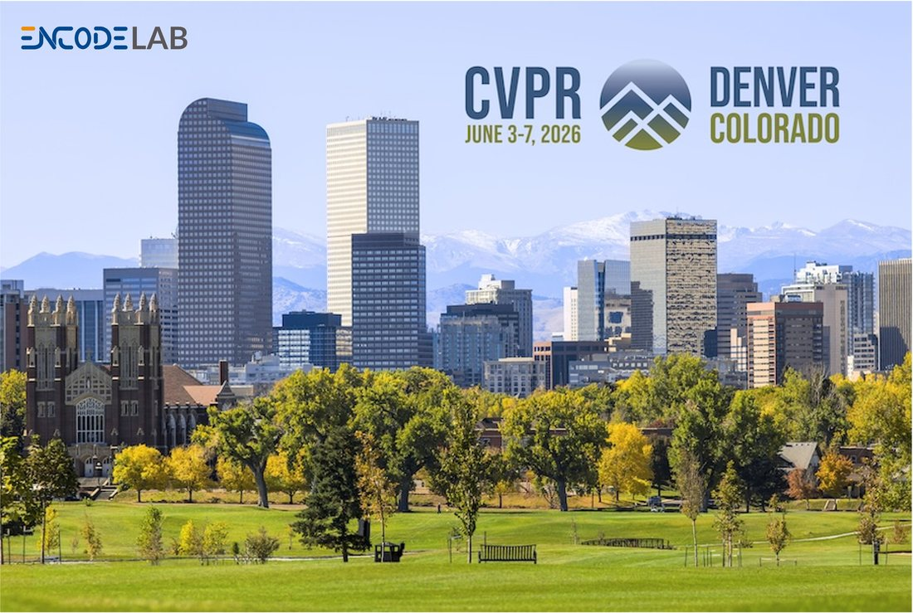

The ENCODE Lab at Westlake University (advised by Dr. Huan Wang) has 6 papers accepted to CVPR 2026 — spanning efficient multimodal LLMs, visual reasoning, autoregressive generation, and 3D model quantization. Four of the six are led by first-time authors. See you in Denver!
Efficient AI
Multimodal AI
Generative AI
Computer Vision
6 papers

CVPR 2026
token compression · streaming video / omni LLMs · visual reasoning · autoregressive image generation · quantization · VGGT / 3D
Accepted papers
OmniZip: Audio-Guided Dynamic Token Compression for Fast Omnimodal LLMs
CVPR 2026 · Token Compression
SAT · Jun 6 · 11:45 AM–1:45 PM | ExHall F · Poster #320
A training-free, “listen-to-prune” framework for omnimodal LLMs: salient audio tokens guide the pruning of video tokens, so audio and video are compressed jointly. Up to ~3.4× faster inference and ~1.4× lower memory with near-baseline accuracy and no retraining.
Keda Tao, Kele Shao, Bohan Yu, Weiqiang Wang, Jian Liu, Huan Wang
EarlyTom: Early Token Compression Completes Fast Video Understanding
CVPR 2026 · Token Compression
SUN · Jun 7 · 3:30–5:30 PM | ExHall A · Poster #405
Vision encoding itself dominates time-to-first-token, so EarlyTom does training-free token compression early — inside the vision encoder — rather than only late in prefilling. With a decoupled spatial token-selection strategy it cuts TTFT by up to 2.65× and FLOPs by up to 61% on LLaVA-OneVision-7B at near-full-token accuracy.
Hesong Wang*, Xin Jin*, Lu Lu, Chenhaowen Li, Jian Chen, Qiang Liu, Huan Wang *equal contribution
StreamingTOM: Streaming Token Compression for Efficient Video Understanding
CVPR 2026 · Streaming Video
SAT · Jun 6 · 4:45–6:45 PM | ExHall A & F · Poster #302
A training-free, two-stage framework for streaming video. Causal Temporal Reduction caps per-frame tokens before the LLM; Online Quantized Memory keeps the KV-cache in 4-bit with on-demand retrieval. ~15.7× KV-cache compression and ~2× faster time-to-first-token vs. prior SOTA, with memory bounded regardless of stream length.
FRI · Jun 5 · 4:00–6:00 PM | ExHall A & F · Poster #34
The first post-training quantization framework for VGGT-style feed-forward 3D reconstruction. Per-block sensitivity drives mixed-precision allocation; token filtering with camera-information compensation tames outlier camera/register tokens; a task-aware scale search preserves cross-head geometric consistency. Near-lossless W4A16 with 3–4.9× memory reduction and up to 2.8× speedup — bringing 3D perception to edge devices.
Parallel Jacobi Decoding for Fast Autoregressive Image Generation
CVPR 2026 · Generative · Fast Inference
FRI · Jun 5 · 4:00–6:00 PM | ExHall A & F · Poster #171
Autoregressive image models are slow because they emit tokens one at a time. PJD reframes decoding as a Jacobi iteration that refines many tokens in parallel, cutting the number of sequential forward passes needed per image and speeding up generation.
ReasonMap: Towards Fine-Grained Visual Reasoning from Transit Maps
CVPR 2026 · Visual Reasoning Benchmark
SUN · Jun 7 · 3:30–5:30 PM | ExHall A · Poster #454
A benchmark of 1,008 human-verified QA pairs over high-resolution transit maps from 30 cities in 13 countries, jointly probing fine-grained visual understanding and spatial reasoning. A two-level metric scores answer correctness and route quality; evaluating ~16 MLLMs surfaces a counterintuitive open- vs. closed-source reasoning-model gap.
Sicheng Feng, Song Wang, Shuyi Ouyang, Lingdong Kong, Zikai Song, Jianke Zhu, Huan Wang, Xinchao Wang